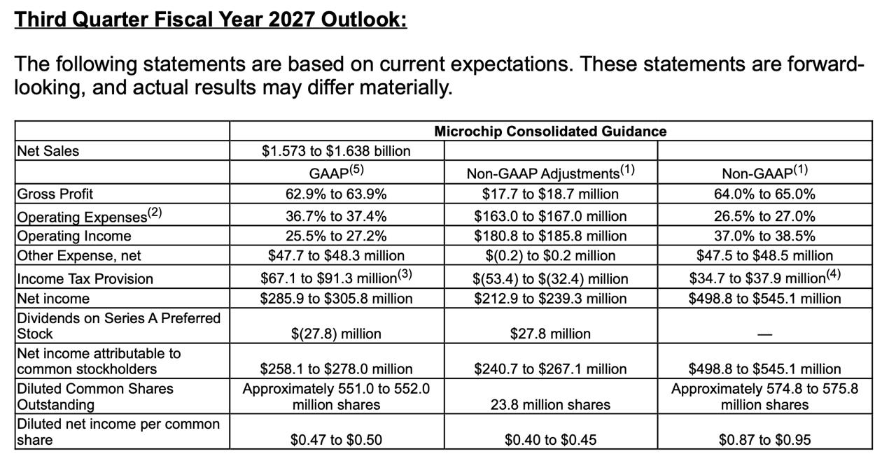

過去 26 小時共 3 則，主角是 Microchip（MCHP）FY27 Q2 財報電話會議重點與 Q3 財測截圖，另有一則陳奕迅 MV 連結。核心訊息：AI 搶走成熟製程與封測產能，傳統 MCU／類比廠交期暴增、缺貨，但 Microchip 管理層對 AI 資料中心本身相當保留。
mchp q2
AI 把成熟製程晶圓、封裝測試和載板產能搶走，傳統類比和 MCU 廠被排擠，交期和成本一起往上走。公司出奇招表示 AI 下去其他會上來，因為產能被搶光光（很懷疑）
- 公司認為週期轉向庫存調整結束，開始缺貨
- 標準品交期以前大多是 4–8 週，現在拉長到 6–32 週，各產品線差很多
- 急單需求比幾季前明顯增加，很多落在交期內的訂單當季出不了貨。
- bb ratio 高於 1，10 月底的 backlog 還在增加
- 通路庫存 25 天，在歷史區間的低端。
- 有 AI 客戶直接包下一家大型 OSAT 工廠產能，把其他客戶擠出去
- 公司 8 月中小幅漲價，短期不打算第二次漲價，先自己吸收上游漲價
- Sanghi 不太看好 AI 資料中心，且論點是 AI 降溫是利多，因為會釋出 OSAT 和代工產能給其他產業（我高度懷疑）
- 他把上開泡沫拆成實體限制：電力、土地、新國會；和金融限制：循環融資、變現
- 機器人、醫療、製程控制、農業設備全面成長
- Sanghi 說 FY28 在極保守情境下 EPS 也超過 4 美元，目前股價約 15 倍本益比，自己都想買
#6533（無文字，圖片）：

Microchip FY27 第三季（12 月季）財測表：營收 15.73–16.38 億美元；Non-GAAP 毛利率 64.0–65.0%、營業利益率 37.0–38.5%；Non-GAAP EPS 0.87–0.95 美元（GAAP 0.47–0.50 美元）。
講解
背景數字：Q2（9 月季）營收 16.22 億美元，季增 9.2%、年增 42.2%；Non-GAAP 毛利率 66.5%、EPS 0.97 美元，高於財測中值 0.04 美元。但本季約 5,300 萬美元屬一次性、毛利 100% 的收入（通路庫存調價約 2,100 萬、專利授權 2,200 萬、長約 1,000 萬），所以 Q3 財測中值營收季減約 1%、毛利率回落到 64–65%。管理層說 Q3 下滑的原因除了一次性項目與 12 月季節性，還有「高毛利產品大量 backlog，但供應鏈做不出來」——也就是缺的是產能，不是需求。
機制：為何 AI 會排擠 MCU？MCU、類比 IC 用的是 8 吋／成熟製程晶圓、傳統封裝與載板。AI 伺服器周邊（電源管理、網通、先進封裝前後段）也大量吃同一批成熟產能與 OSAT（委外封測廠）產能，出價又高，傳統客戶就被擠到後面。結果是交期從 4–8 週拉到 6–32 週、交期內急單當季出不了貨。交期拉長通常會引發客戶重複下單（double ordering），讓 backlog 看起來更強，這是下一階段要留意的風險。
查證：多數條目與逐字稿一致：交期「4–8 週 → 6–32 週」、急單當季無法支援、通路庫存 25 天（季持平、歷史低端）、book-to-bill「遠高於 1」皆為管理層原話。幾點補充：①逐字稿說的是「12 月季開季 backlog 高於 9 月季開季」，我沒在可讀到的逐字稿段落看到「10 月底」的具體數字，此點以貼文為準。②「新國會」應是「國會可能介入」（Congressional action）的意思，Sanghi 列的實體限制是資料中心土地、電力與國會；金融限制是循環融資與變現能力，並說資料中心「二階導數必須大幅下降」。③AI 客戶包下整座封測廠、8 月漲價後打算先吸收上游漲價、「AI 降溫會釋出產能、對我們反而是正面」、FY28 保守情境 EPS 逾 4 美元、股價約 15 倍本益比，這些來自 Q&A，我只取得摘要版本未逐字核對，方向與貼文一致；FY28 數字是執行長的情境說法，不是正式財測。④產業面：機器人在官方講稿中列為長期成長動能，醫療、製程控制、農機的「全面成長」僅見於 Q&A 摘要，沒有具體成長率。⑤另值得一提：資料中心業務本季超過 2.5 億美元、2026 年有望達 10 億美元，可見 Microchip 自己也吃到 AI 紅利，執行長「不看好 AI 資料中心」的說法與此並存，股癌對「AI 降溫是利多」的懷疑有其道理——若 AI 降溫，資料中心這塊成長也會跟著降。
怎麼看：這份財報是「成熟製程／MCU 進入缺貨週期」的訊號（低通路庫存＋交期拉長＋急單），對同業（TI、ADI、NXP、ST、瑞薩及台系 MCU、成熟製程代工與封測）也有參考價值；但 Q3 營收與毛利是季減，短期數字受產能卡住，上行要看產能何時跟上與漲價是否落地。
講解：連結是陳奕迅《十年(國) [OT：明年今日]》官方 MV（英皇娛樂頻道），無文字說明，非財經內容，用意不明，不做延伸解讀。
註：Q&A 部分（AI 客戶包廠、漲價、AI 泡沫、FY28 EPS）僅取得摘要，未逐字核對。